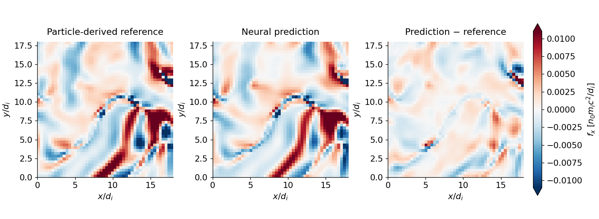

Watch the missing push on the fluid
A fluid model needs to know how unequal ion pressures push the plasma. Can a neural network recover that push from the fluid fields?
Red means a push to the right. Blue means a push to the left. White means little force in that direction. These colors show force, not the direction the plasma is already moving.

The anisotropic force reconstructed from the particle simulation’s pressure moments.
The fine-tuned network sees density, flow, magnetic field and mean temperature. The parallel/perpendicular temperatures are hidden.
Prediction minus reference. White is good. Colored patches locate where the correction is still wrong.
What you should look for
Pick a red or blue structure on the left. Step through the snapshots and look for the same structure in the middle. Then check the error panel: a convincing reconstruction leaves much weaker color there.
Across all six frames in this training regime, the fine-tuned model cuts pressure-force mean-squared error by 62% relative to omitting this force.
The pitch: we can reconstruct a useful part of the force that a simple fluid model leaves out. The next scientific question is whether using that correction improves the fluid’s future evolution.
This is not the neural network predicting the future
At each saved time, the network is given that time’s fluid fields and predicts the missing pressure imbalance. The movie shows those offline predictions through time. The pressure-force reference is derived from kinetic moments; it is not the full kinetic force.
Our separate fluid probe did run freely for 25 steps, but that is a very short numerical integration check. It has no matched PIC target trajectory yet. See the actual evolution curves and their limits →
Physical definitions and sampling
The pressure imbalance is ln(T⊥/T∥), measured relative to the local magnetic field. Given anisotropy and supplied scalar pressure, we reconstruct a trace-preserving gyrotropic pressure tensor. The force shown is its deviatoric contribution, fₓ = −∂ⱼΠₓⱼ, in n₀mᵢc²/dᵢ. Nongyrotropic stress and heat flux are not evaluated here.
Snapshots: 181, 184, 187, 191, 195, 199. Playback gives equal viewing time to these unevenly spaced samples; it is not a physical clock. The plane is the central z slice, restricted to the central 48³-cell evaluation region. Axes are local distances in ion skin depths. Color limits use the 99th percentile across reference and prediction in all six frames of the selected run; extreme values saturate. Color scales differ between runs and quantities.
Training regime: mime64.5e2; unseen simulation: mime16.5e2. These are development-validation frames already used for model selection, not a pristine temporal benchmark. The isotropic baseline contributes zero anisotropic force. Reference fluid fields are supplied to all offline predictions.